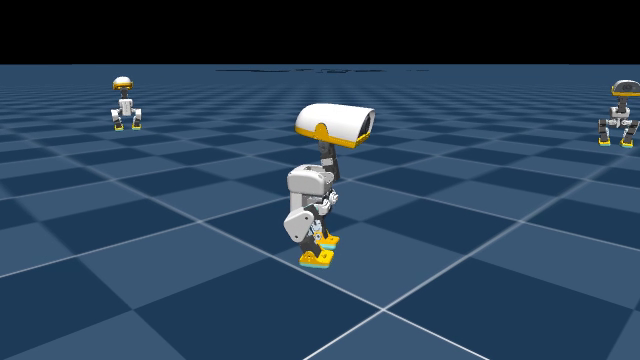
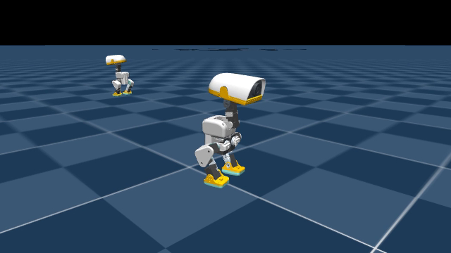
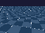

왜 WSL2인가. 취향이 아닙니다. 상위 저장소의 잠금파일이 CUDA 의존성을 리눅스에만 걸어두어, 네이티브 윈도우에 설치하면 CPU 전용 파이토치로 해석되고 GPU 선택 단계에서 죽습니다. 저장소는 WSL 파일시스템 안에 두어야 합니다. /mnt/c에 두면 파일 입출력이 크게 느려집니다.
학습 방법
전 과제가 같은 뼈대를 씁니다. PPO 하나로만 돌렸고, 구현은 rsl-rl 5.0.1, 환경은 mjlab의 매니저 기반 구성입니다. 오프폴리시나 모방학습은 쓰지 않았습니다.
항목
값
항목
값
알고리즘
PPO (비대칭 액터-크리틱)
할인율
0.99
액터 관측
61차원
GAE λ
0.95
크리틱 관측
76차원 (특권 상태 포함)
클립
0.2
액터망
61→512→256→128→14, ELU
엔트로피 계수
0.01
크리틱망
76→512→256→128→1, ELU
학습률
1e-3, 적응형
행동 분포
가우시안, 스칼라 표준편차 (초기 1.0)
목표 KL
0.01
환경당 스텝
24
에폭 / 미니배치
5 / 4
관측은 고유수용 감각(각속도·중력투영·관절 위치·관절 속도·직전 행동)과 명령(속도 3, 머리 자세 4, 몸통 자세 6)으로 구성됩니다. 높이 스캔이 없습니다. 험지에서 정책은 지면을 못 보고 몸으로 느낀 외란만으로 추론합니다.
도메인 무작위화는 세 시점에 겁니다. 시작 시점에 마찰·엔코더 편향·질량중심·관성, 초기화 시점에 질량중심·관절 마찰·아마추어·자세, 주기적으로 외부 밀기입니다. 커리큘럼 항은 일곱 개이고 전부 2,000회차에서 끝납니다. 그 뒤로는 과제가 고정됩니다.
보상은 보행 과제 기준 15개 항입니다. 낙상 벌점도 종료 벌점도 없습니다. 점프 과제에만 낙상 벌점 −500을 따로 넣었습니다. 이 차이가 뒤에 나오는 두 실패를 갈랐습니다.
날짜별 기록
2026-09-01
환경 구축과 첫 실행
한 일설치, GPU 경로 확인, 5회 반복짜리 짧은 실행 다섯 개, 한 시간 연속 열 테스트.
결과1시간에 1,250회 반복. 온도와 처리량이 안정적. 학습을 걸어도 되는 상태 확인.
교훈본 실험 전에 한 시간짜리 연속 실행을 반드시 해보십시오. 노트북 GPU는 발열로 처리량이 떨어지는데, 5분 실행으로는 보이지 않습니다.
설정PPO · rsl-rl 5.0.1 속도추종 평지 과제로 스모크 5회 + 1시간 연속. 환경 수와 처리량 한계 측정.
2026-09-02
평지 보행 기준선, 그리고 후반 퇴행
한 일속도추종 평지 과제를 두 시드로 학습(각 6,000회 내외), 한 시드는 9,500회까지 연장. 험지 과제는 웜스타트로 18,249회 완주.
결과험지는 완주했고 최종 평균 보상 100.21. 그런데 평지에서 후반에 성능이 나빠지는 현상을 발견했습니다. 6,000회차 체크포인트의 낙상률이 34~38%로, 그 전 체크포인트보다 나빴습니다.
교훈마지막 체크포인트가 최선이라고 가정하지 마십시오. 이 과제에는 낙상 벌점이 아예 없습니다. 넘어져도 정책이 손해를 안 보니 더 공격적인 쪽으로 계속 밀려갈 수 있습니다. 게다가 질량중심 무작위화를 ±30mm까지 올린 구간이 발 지지면을 벗어났고, 퇴행이 나타난 시점이 그 증가 시점과 맞았습니다. 상한을 ±15mm로 되돌렸습니다. 원인 추정은 검증되지 않았다고 명시해 두었습니다.
한 일계단 높이를 바꿔가며 넘을 수 있는 한계를 쟀습니다. 점프가 물리적으로 가능한지 계산했습니다. 앉았다 일어서기 과제를 새로 열었습니다.
결과계단은 실용 한계가 약 1cm였습니다(낙상률 40% 미만 기준). 원인은 학습 커리큘럼의 계단 범위였습니다. 앉았다 일어서기는 13,000회차에서 한 사이클 성공률 66.4%.
교훈점프 상한을 0.91cm로 계산했다가 같은 날 밤에 틀렸음을 발견했습니다. 기준점을 발목에 두고 계산했는데 실제로는 발끝이 지면을 미는 지점이었습니다. 다시 계산하니 낙관적 상한이 4~6cm였습니다. 틀린 값을 지우지 않고 정정 항목을 새로 추가했습니다.
설정PPO · Mjlab-Stairs-Rough-MicroDuck · Mjlab-SitStand-Flat-MicroDuck 계단은 학습이 아니라 기존 정책의 평가 스윕. 앉았다 일어서기는 2,048환경 신규 학습. 자세 평가는 evaluate_squat.py(128환경 스크립트 프로토콜).
2026-09-04
제자리 점프는 안 되고, 달리다 뛰는 건 됐다
한 일제자리 점프를 8,000회까지 학습. 실패 후 보상 설계를 바꾼 2판. 동시에 달리면서 뛰는 과제를 병행.
결과제자리 점프는 8,000회까지 이륙 자체가 없었습니다. 반면 달리기 점프에서는 처음으로 측정 가능한 도약이 나왔습니다. 깨끗한 점프 11%, 평균 상승 0.63cm.
교훈정책의 엔트로피를 보십시오. 14차원 행동공간에서 엔트로피가 −10.2까지 떨어져 있었습니다. 탐색이 죽은 상태라 아무리 오래 돌려도 새 동작이 나오지 않습니다. 오래 돌리는 게 답이 아닐 때가 있습니다.
한 일웅크렸다 발끝으로 차는 기준 궤적을 직접 만들어 개루프로 재생했습니다. 그 궤적을 참고 신호로 준 4판을 학습했습니다.
결과기준 궤적은 실제로 떴습니다. 체공 86밀리초, 높이 4.75cm. 그런데 100% 넘어졌습니다. 달리기 3판은 깨끗한 점프 17%(주행 조건 22%), 최대 4.1cm로 최고 기록. 제자리 4판은 17,798회차에서 뛰기 시작했다가 18,551회차에서 다시 안 뛰기로 후퇴했습니다.

달리기 점프 3판, 최고 기록이 나온 순간.

제자리 점프 4판. 뛰었다가 후퇴한 그 정책.
교훈이 프로젝트에서 가장 중요한 발견입니다. 낙상 벌점이 −500인 상태에서, 정책은 뛰면 넘어지니까 뛰기를 포기하는 쪽이 이득이라고 학습했습니다. 뛰는 법을 못 배운 게 아니라 배웠다가 버린 겁니다. 처방은 순서를 바꾸는 것입니다. 착지를 먼저 가르치고 그다음에 점프를 가르친다.
설정PPO · Jump-Stand-v3·v4 · Jump-Run-v3·v4 · Mjlab-Land-Flat-MicroDuck(준비) v4는 웅크렸다 차는 기준 궤적을 관측에 추가한 구성. 개루프 재생은 학습 없이 궤적만 물리에 넣어 확인. 평가는 신호 1,536회 기준 자체 평가기.
2026-09-06
보행 미세조정 A/B와 카메라 학습 경로 준비
한 일속도추종 보상 커널의 폭을 좁힌 미세조정을 대조군과 A/B로 비교했습니다. 별도로 단안 카메라만 쓰는 학생 정책 인터페이스를 만들었습니다.
결과가설 기각. 추종 성능이 좋아지지 않았고, 오히려 제자리 회전 능력을 잃었습니다. 밀기에 대한 강건성은 동등했습니다.
교훈기각된 A/B도 기록할 가치가 있습니다. 다음 사람이 같은 걸 다시 시도하지 않습니다. 그리고 카메라 학습 경로를 만들 때는 정보 누출 감사를 먼저 하십시오. 깊이나 특권 정보가 학생 관측에 섞이면 결과가 전부 무의미해집니다.
설정PPO · 속도추종 미세조정 A/B 추종 커널 분산만 0.1 → 0.025로 바꾼 대조 실험. 두 팔 모두 같은 종료 상태 커리큘럼에서 출발. 별도로 lab_vision/에 단안 RGB 학생 관측군 추가(누출 감사 포함).
2026-09-08
카메라가 껍데기 안쪽을 보고 있었다
한 일렌더링된 카메라 프레임이 계속 어둡게 나오는 문제를 추적했습니다.
결과근본 원인을 찾았습니다. 모델 파일의 머리 카메라가 부드러운 턱 껍데기 안쪽에서 뒤쪽을 향하고 있었습니다. CPU 레이캐스트로 증명한 뒤 전방을 보도록 자세를 잡았습니다. 프레임 평균 밝기가 255 중 70으로 회복됐습니다.
수정 전 · 09-06

수정 후 · 09-08
학생 정책이 실제로 받던 64×48 RGB 관측입니다. 왼쪽은 껍데기 안쪽을 보고 있던 상태입니다.
교훈센서가 이상하면 값을 의심하기 전에 센서가 어디를 보고 있는지부터 그려보십시오. 렌더 파이프라인을 며칠 의심하는 것보다 레이캐스트 한 번이 빠릅니다.
설정진단 작업 (학습 없음) → StandUp-Flat 착수 어두운 프레임은 CPU 레이캐스트로 원인 규명. 기립 과제는 2,048환경 PPO, 평가 기준을 학습 전에 문서로 등록.
2026-09-09
넘어진 자세에서 일어나기 — 명확한 실패
한 일기립 과제를 5,000회 학습하고, 평가 기준을 미리 등록한 뒤 정해진 넘어진 자세들에서 시험했습니다.
결과앉은 자세에서 일어서기 98.4%, 선 자세 유지 100%. 그러나 엎드린 자세에서 0%, 누운 자세에서도 0%입니다. 엎드린 자세에서는 약 35도까지 몸을 들었다가 거기서 멈췄습니다. 판정: 실패.
교훈평가 기준을 학습 전에 글로 못박아 두십시오. 결과를 보고 기준을 정하면 실패를 성공으로 읽게 됩니다. 이번에도 채점기에 버그가 있어 고쳤지만, 원자료는 건드리지 않고 다시 채점하는 도구를 따로 만들었습니다.
설정PPO · StandUp-Flat 5,000회차 결과 평가는 recov_eval.sh 체인. 넘어진 자세를 고정 조건으로 지정하고 일어서서 버티는 것까지 성공으로 셈. 채점기 수정 후 원자료는 그대로 두고 재채점 도구를 따로 만듦.
코드가 어떻게 도는가
1 · 한 번의 학습 실행 — 스크립트 하나가 학습부터 평가·영상·기록까지 이어서 돌립니다. 빨간 지점이 실제로 끊겼던 곳입니다.
flowchart TD
A["jump_stand_run.sh<br/>TASK · TAG · LOAD_RUN · LOAD_CK · ITERS"] --> B["mjlab 환경 조립<br/>관측·보상·이벤트·커리큘럼 매니저"]
B --> C["rsl-rl PPO 학습<br/>2048 환경 × 24 스텝"]
C --> D["체크포인트 250회마다<br/>model_N.pt"]
C --> E["TensorBoard 이벤트"]
D --> F["ONNX 내보내기<br/>정규화기 포함"]
D --> G["평가기<br/>신호 1536회 · 고정 조건"]
G --> H["결과 CSV · 매니페스트"]
D --> I["재생 영상 녹화"]
H --> J["보고서 · 일지 항목"]
I --> J
C -. "세션 종료 시 사망" .-> X1["학습 중단<br/>13205 · 6512 회차"]
C -. "실행 중 스크립트 덮어씀" .-> X2["후처리 전체 유실"]
style X1 fill:#f6e5e5,stroke:#a33f3f
style X2 fill:#f6e5e5,stroke:#a33f3f
2 · 비대칭 액터-크리틱 — 크리틱만 특권 정보를 봅니다. 실기에 올라가는 것은 액터뿐이라, 액터 관측에 시뮬레이터 전용 값이 섞이면 배포가 불가능해집니다.
flowchart LR
subgraph OBS["관측"]
direction TB
P["고유수용 48<br/>각속도 3 · 중력투영 3<br/>관절위치 14 · 관절속도 14<br/>직전행동 14"]
C2["명령 13<br/>속도 3 · 머리자세 4 · 몸통자세 6"]
PR["특권 15<br/>시뮬레이터 전용"]
end
P --> AC["액터 61<br/>512-256-128 ELU"]
C2 --> AC
P --> CR["크리틱 76<br/>512-256-128 ELU"]
C2 --> CR
PR --> CR
AC --> ACT["행동 14<br/>가우시안 · 스칼라 표준편차"]
CR --> V["가치 1"]
ACT --> ONNX["ONNX 내보내기<br/>실기 배포"]
V -. "학습에만 사용" .-> PPO["PPO 업데이트"]
ACT --> PPO
style PR fill:#f8f1e8,stroke:#a8642a
style ONNX fill:#eaf0ea,stroke:#2f7d5a
3 · 커리큘럼이 끝나는 시점 — 일곱 개 커리큘럼 항이 전부 2,000회차에서 최종 단계에 도달합니다. 그 뒤로 과제는 고정입니다. 후반 퇴행을 해석할 때 이 경계가 중요합니다.
flowchart LR
S["0 회차<br/>학습 시작"] --> R["램프 구간<br/>0 to 2000<br/>머리자세 5단계 · 질량중심 ±15mm<br/>행동변화율 · 정지환경 비율"]
R --> F["2000 회차<br/>모든 커리큘럼 종료"]
F --> ST["고정 과제 구간<br/>2000 이후"]
ST --> REG["6000 회차 퇴행<br/>낙상률 34 to 38 퍼센트"]
REG --> Q["과제는 안 변했는데 왜 나빠지나<br/>낙상 벌점이 없어서 넘어져도 손해가 없다"]
style REG fill:#f6e5e5,stroke:#a33f3f
style Q fill:#f8f1e8,stroke:#a8642a
4 · 점프를 배웠다가 버린 구조 — 이 프로젝트에서 가장 중요한 인과입니다. 보상 설계가 만든 국소 최적입니다.
flowchart TD
T["점프 과제<br/>낙상 벌점 -500 고정"] --> E1["탐색 초기<br/>뛰면 거의 항상 넘어진다"]
E1 --> R1["기대 보상<br/>뛴다 = 큰 음수"]
E1 --> R2["기대 보상<br/>안 뛴다 = 0 근처"]
R1 --> D["정책 선택<br/>안 뛰는 쪽이 이득"]
R2 --> D
D --> EN["엔트로피 붕괴<br/>14차원에서 -10.2<br/>탐색이 죽는다"]
EN --> N["오래 돌려도 새 동작이 안 나온다"]
T --> O["관측된 실제 궤적"]
O --> O1["17798 회차 뛰기 시작"]
O1 --> O2["18551 회차 다시 안 뛰기로 후퇴"]
N --> FIX["처방"]
O2 --> FIX
FIX --> F1["착지를 먼저 가르친다"]
FIX --> F2["벌점을 0에서 단계적으로 올린다"]
FIX --> F3["초기에 위로 당기는 보조력을 주고 줄인다"]
style D fill:#f6e5e5,stroke:#a33f3f
style EN fill:#f6e5e5,stroke:#a33f3f
style FIX fill:#eaf0ea,stroke:#2f7d5a
점프 결과 요약
정책
깨끗한 점프
신호당 낙상
평균 상승
최대
대조군 (평지 보행)
약 6%
0.3%
0.5 cm
1.2 cm
달리기 점프 2판
11%
0.9%
0.63 cm
3.6 cm
달리기 점프 3판
17%
0.3%
1.00 cm
4.1 cm
제자리 점프 1~4판
대조군 수준. 유의미한 도약 없음
신호 1,536회 기준. 달리기 점프 3판은 주행 조건에서 22%, 최대 4.7cm까지 올라갔습니다.
움직이는 것 보기
평지 보행, 6,000회차. 기준선이 되는 정책입니다.
앉았다 일어서기, 8,000회차. 내려갈 때 넘어지는 경향이 보입니다.
달리기 점프 3판, 16,000회차. 가장 높이 뛴 정책입니다.
되풀이하지 말 것
아래는 전부 한동안 사실이라고 믿었던 틀린 숫자들입니다. 논문의 방법론은 무엇이 잘못됐는지 적은 만큼만 믿을 수 있습니다.
에피소드 한계보다 짧게 평가하면 낙상률이 무조건 100%로 나옵니다
1,000스텝 한계를 2,000스텝으로 평가하면 시간 초과가 불가능해져 끝난 에피소드가 전부 낙상으로 집계됩니다. 최소 3배 길이로 평가하십시오.
서로 다른 길이로 잰 낙상률을 비교하지 마십시오
2,000스텝으로 잰 값과 3,500스텝으로 잰 값을 나란히 놓았다가 잘못된 결론을 냈습니다.
윈도우에서 GPU 메모리 사용량은 믿을 수 없습니다
환경 2,048개가 4,096개보다 더 많은 메모리를 쓰는 것으로 보고됐습니다. 메모리 여유를 기준으로 실험을 멈추는 규칙은 세우지 마십시오.
속성 이름이 틀렸는데 예외를 삼켜서 조용히 결측이 됐습니다
속도 값이 모든 높이에서 결측으로 나왔습니다. 맨 except가 오류를 먹고 있었습니다. 예외는 치명적으로 처리하십시오.
월드 좌표 이동거리는 평균이 0이 됩니다
명령이 몸통 기준이고 초기 방향이 무작위라, 모두가 제대로 걸어도 월드 기준 X 변위 평균은 0.041m였습니다. 출발점 기준 평면 거리로 바꾸십시오.
지표가 의도한 것을 재고 있는지 확인하십시오
계단을 몇 칸 올랐는지 재려던 지표가 모든 높이에서 같은 값이었습니다. 실은 걸을 때의 상하 흔들림을 재고 있었습니다. 결과에서 철회했습니다.
점프 판정에 자세 검사를 넣으십시오
몸통이 거의 수평인 상태도 점프로 집계되고 있었습니다.
실행 중인 스크립트 파일을 덮어쓰지 마십시오
bash는 스크립트를 파일 오프셋으로 읽습니다. 3시간짜리 학습이 도는 중에 같은 이름으로 배포했더니, 학습이 끝난 뒤 bash가 새 파일의 엉뚱한 위치부터 읽어 후처리 전체가 날아갔습니다. 학습 자체는 무사했지만 평가와 영상과 기록이 실행되지 않았습니다. 새 이름으로 배포하거나 끝날 때까지 기다리십시오.
운영에서 배운 것
긴 학습은 세션에서 분리해 띄우십시오
대화형 세션의 백그라운드 작업이 두 번 통째로 종료됐습니다. 각각 13,205회차와 6,512회차에서였습니다. 250회마다 체크포인트를 남겨둔 덕에 둘 다 복구했습니다.
의존성 잠금을 함부로 갱신하지 마십시오
구동기 모델이 가변 브랜치의 커밋에 묶여 있습니다. 잠금을 갱신하면 이미 학습한 모든 정책 아래에서 구동기 특성이 조용히 바뀝니다.
체크포인트는 해시로 참조하고 복사하지 마십시오
결과물 디렉터리가 금방 수 기가바이트가 됩니다. 기록에는 해시만 남기고 실물은 원래 자리에 두십시오.
지금 상태
2026-09-05에 사용자 요청으로 학습을 일시 중지했고, 이후 평가와 시각 경로 정비, 기립 과제를 진행했습니다. 달리기 점프 4판은 17,250회차에서 멈춰 있습니다. 다음 단계는 착지 과제를 먼저 학습한 뒤 낙상 벌점을 단계적으로 올리는 커리큘럼입니다. 기준 궤적이 물리적으로 뜬다는 것은 확인했으므로, 남은 문제는 뛰는 법이 아니라 내려앉는 법입니다.